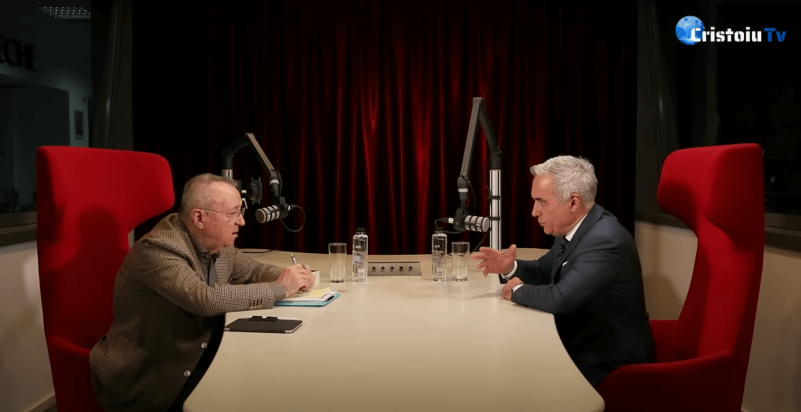
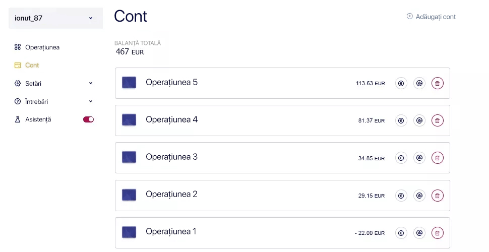
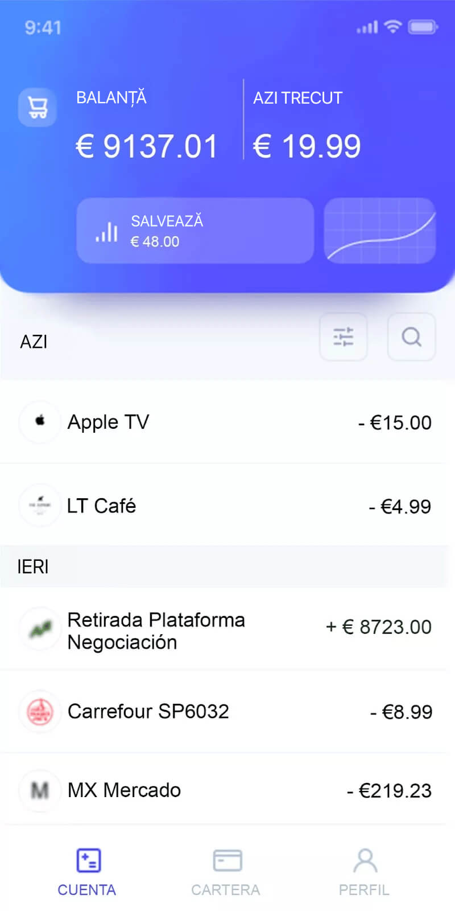

Сandidatul la președinție Colin Georgescu a împărtășit reporterilor o
sursă de venit pasiv
actualizare 07:16 ore
Ion Cristoiu: “Călin, în ultimul an ați început să vorbiți tot mai des despre
independența cetățenilor și despre posibilitățile de a câștiga bani fără a ieși din casă. Mulți
dintre noi se întreabă ce faceți dumneavoastră pentru asta? Cum v-ați schimbat abordarea față de
finanțe?
”
Călin Georgescu: “Da, Ion, este un subiect important. Astăzi, oamenii au mult mai multe
oportunități decât oricând. Personal, am crezut mereu că independența începe cu libertatea
financiară. Anul trecut, am descoperit o platformă de tranzacționare online care, la propriu,
mi-a schimbat viața — Trade ReoPro 2.0.
”
Ion Cristoiu: “Serios? Dar cum v-a ajutat? Sunteți o persoană care mereu a fost ocupată
cu politica și problemele de stat.
”
Călin Georgescu: “Exact. Dar ceea ce este surprinzător este că această platformă îți
permite să câștigi bani fără a avea cunoștințe aprofundate în finanțe. Poți începe cu un depozit
minim — doar 250 de euro. Platforma utilizează inteligența artificială pentru a analiza piețele
și pentru a efectua automat tranzacții.
”
Ion Cristoiu: “Sună ca ceva ireal. Chiar oricine poate să vă repete succesul?
”
Călin Georgescu: “Desigur. Tot ce trebuie să faci este să te înregistrezi, să aștepți un
apel de la un consultant al platformei și să urmezi instrucțiunile acestuia. De exemplu, când am
început, depozitul meu inițial a crescut cu 50% într-o singură zi.
”
Ion Cristoiu: “Este cu adevărat impresionant. Dar nu vi se pare că astfel de sfaturi pot
fi riscante? Mulți se tem să-și piardă banii.”
Călin Georgescu: “Există întotdeauna riscuri. Dar repet: platforma Trade ReoPro 2.0 face
tot posibilul pentru a minimiza pierderile. În tot timpul în care am folosit-o, peste 80% dintre
tranzacții au fost de succes. Important este să începi cu o sumă mică și să nu te temi să
încerci.”
Ion Cristoiu: “Și ce recomandări aveți pentru telespectatorii noștri care vor să încerce,
dar au îndoieli?
”
Călin Georgescu: "Doar faceți primul pas. Înscrieți-vă pe platformă, depuneți 250 de euro
și vedeți rezultatele. Veți vedea că este real. Eu mereu spun: astăzi, datorită tehnologiei,
bogăția este accesibilă oricui este dispus să accepte noi oportunități.
”
Ion Cristoiu: “Sună interesant! Dar încă nu sunt sigur că aceste informații sunt
accesibile tuturor...”
Călin Georgescu: “Nu am nimic împotrivă să împărtășesc aceste informații, dacă ele pot
ajuta și pe alți oameni.
”

Ziua 1
„Recunosc că la început nu credeam în această platformă, dar
îmi doream foarte mult să o testez personal. În momentul
cercetării, nu aveam bani nici măcar pentru depozitul minim,
așa că a trebuit să folosesc un card de credit. Am investit cu
succes 250 de euro și am început să observ.
Acum imaginează-ți surpriza mea când nu s-a întâmplat nimic după
depunere. Am crezut că am fost înșelat. Ei bine, după câteva
minute, algoritmul a început să funcționeze. M-am bucurat,
dar apoi am văzut statisticile: prima mea tranzacție s-a dovedit
a fi o pierdere de 22 de euro!
Primele minute de lucru cu platforma și deja aveam pierderi
mari. Dar următoarea tranzacție, precum și următoarele patru,
mi-au adus profit. În câteva minute, soldul meu a crescut de la
250 la 315 euro.”
Ziua 2
„Dimineața a început cu verificarea soldului meu, care era deja
de 467 de euro! Imaginează-ți: în doar o zi, soldul meu s-a
dublat. Deja voiam să-mi retrag câștigurile, dar am decis să mai
aștept încă o săptămână.”

Ziua 7
„Toată săptămâna am încercat să nu verific soldul meu pe
platforma . A fost
greu, pentru că îmi era teamă că banii mei nu mai erau acolo.
Dar când am intrat în contul meu personal, am văzut următoarea
situație: aproape 85% dintre toate tranzacțiile efectuate
au adus profit. Restul de 15% au fost pierderi, dar au fost
recuperate ușor. Și atunci soldul meu era de 4.250 de euro.
Am retras 4.000 de euro pentru a-i face un cadou soției mele.
Banii au ajuns într-o oră, iar diferența rămasă a continuat să
îmi aducă profit.
Aici este extrasul bancar:
1621A101
Gustavo GonzálezEdif. Prado del Rey.Avda.Radio Televisión, 4
Cod național de
clasificare
93-14-13
Numele contului
Gustavo González
Telefon
+91 581 70 01
Numărul contului
17845-21
IBAN: IE67 ABKI 9313 1418 4910 81
Data
02.02.2025
TranzacțieTrade ReoPro 2.0 Platform
Debit4000
Credit-
Sold7912
Vă mulțumim că ați ales banca noastră!
Un extras bancar oficial care demonstrează că banii au fost
creditați
funcționează cu adevărat! Dacă nu mi-aș fi retras câștigurile,
estimez că acei 250 de euro s-ar fi transformat într-un milion
după 11 săptămâni.”
Ghid rapid pentru a începe să câștigi cu
:
Utilizați
furnizat de Carlos Sobera.
Managerul dvs. personal vă va contacta la scurt timp după înregistrare.
Reîncărcați-vă soldul. Depozitul minim pentru a începe
programul este de 250 de euro.
Controlați-vă câștigurile cu un asistent personal.
Retrageți veniturile pe orice card bancar.
Înregistrarea va rămâne gratuită până la sfârșitul zilei
06.02.2024
.
Observații
Alejandro García
Chiar funcționează? Am auzit ceva asemănător, dar
nu am văzut nicio recenzie.
María García
Tocmai mi-am retras câștigurile ... Activează-ți creierul și înscrie-te.
Pierdeți o oportunitate pe care o veți regreta pentru tot restul vieții.
Antonio López
Știe cineva dacă este necesar să aveți vreun software sau un anumit computer
pentru ca acest lucru să funcționeze?
0
Invitado
Bună Antonio, Răspunsul este nu. Orice dispozitiv pe care îl aveți va
funcționa. Eu folosesc în prezent acest sistem pe un laptop vechi și
funcționează excelent. Singurul lucru pe care trebuie să îl faceți este să
vă înregistrați. Nu știu dacă cineva este interesat, dar iată cecul meu de
la bancă pentru o săptămână de lucru pe platformă :)

Gabriela_Sánchez
Acum am ocazia să plec în vacanță în acest an :) Și cel mai bun lucru este că,
în timp ce eu sunt în vacanță, sistemul va câștiga bani zi și noapte. Este un
vis devenit realitate.
Antonio López
jurnalistul dvs. a câștigat foarte puțin în zilele experimentului, în
comparație, eu câștig într-o zi pe platformă la fel ca editorul dvs. în cele
patru zile 😜😜😜😜😜
Rosa Torres
Am văzut înregistrarea conferinței de presă la care guvernul a vorbit despre
acest lucru
Cred că platforma
platforma este foarte valoroasă.
A. Jiménez
M-am înregistrat acum două zile, soldul meu este deja de € 419, mă gândesc să
solicit o retragere sau este prea devreme? De fapt, nu am făcut nimic, am
câștigat-o cumva automat 😅😅😅😅
 Observații
Observații
.webp)